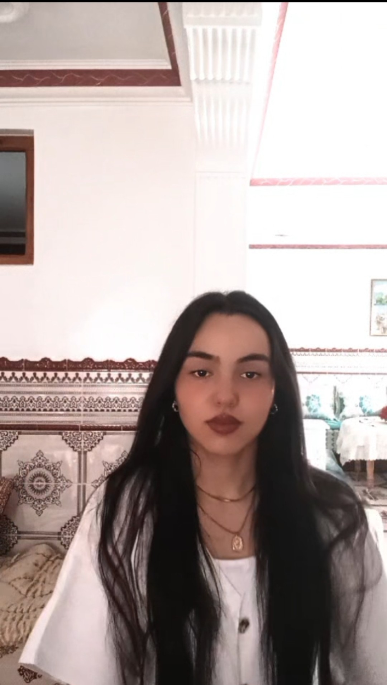

Em dic Farah Abagui, tinc el cap a mil coses a la vegada i visc a Sant Boi. Ara mateix estic fent Batxillerat, que sincerament és una mica estressant, però bueno, anem fent. Més enllà d'estudiar i dels exàmens, m'agrada molt tenir els meus moments per fer les coses que realment em motiven i em fan sentir bé.
Una de les meves maneres preferides de desconnectar és pintant. M'encanta agafar els pinzells i simplement deixar-me anar, és com el meu refugi quan vull estar tranquil·la. També soc molt de llegir; m'agrada clavar-me en una bona història i oblidar-me una mica de tot el que m'envolta. Això sí, no tot és estar relaxada a casa. També necessito moure'm i cremar energia, per això intento anar al gimnàs sempre que puc. M'ajuda moltíssim a buidar el cap i a sentir-me activa.
En conclusio, soc una noia que intenta combinar els estudis amb les meves passions, ja sigui amb un llibre a la ma o entrenant a tope. Espero que amb aquesta web em pugueu conèixer una miqueta més!
